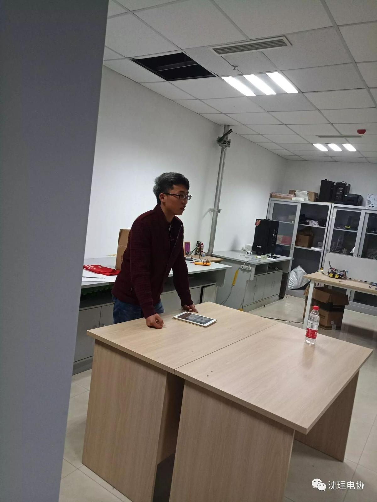
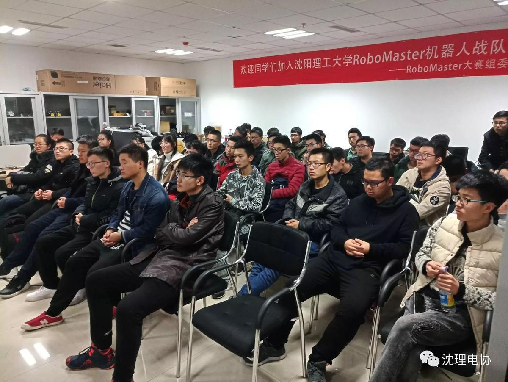
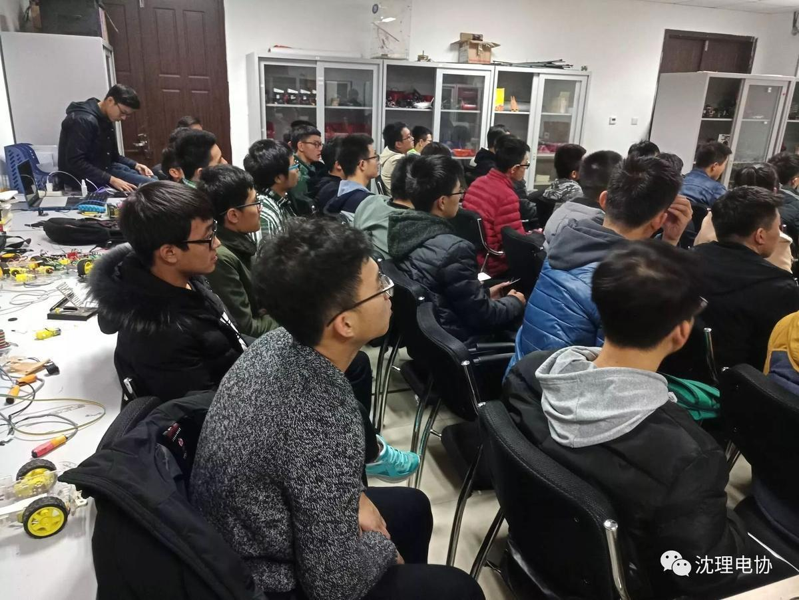
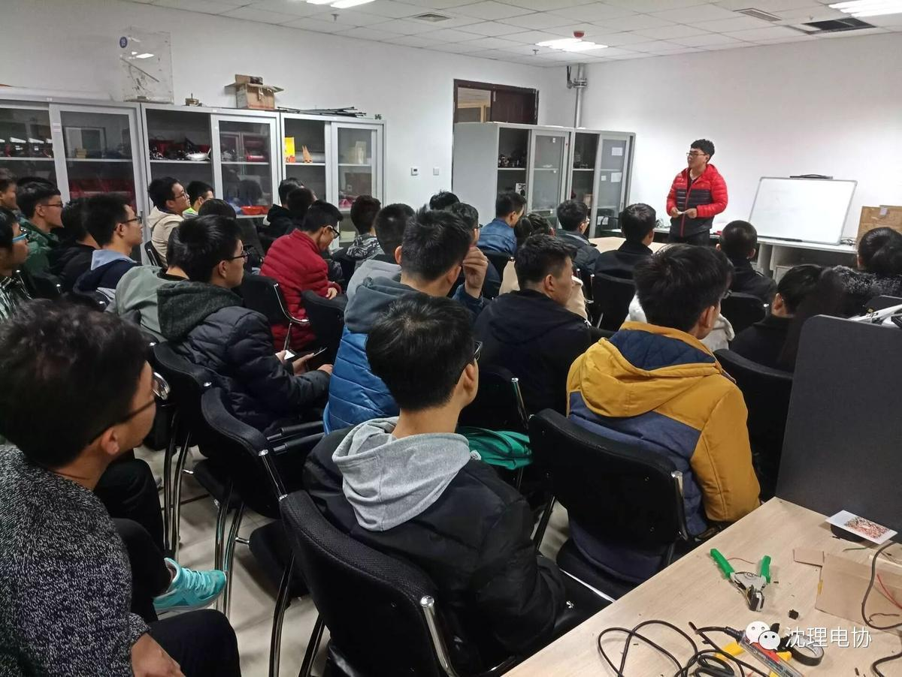

第一次实践教学活动。
期待已久的实践操作课
终于开课啦！！！

12日下午一点，准时到达的萌新们在技术部李毅学长的带领下开始了期待已久的实践教学课。


我从同学们的脸上看出了认真，拥有对实践操作课程极大的兴趣。

李毅学长讲完了关于Arduino单片机的IO口扩展内容之后，同学们意犹未尽，于是王枭学长又上台为大家详细讲解了关于Arduino的编程过程和编译原理。

最后，两位学长总结了此次的教学内容，发表了自己对社团，对技术与学习的见解与看法，这不仅对新同学们在电协的学习有帮助，也会对今后四年的大学生活产生极大的积极的影响。我相信在这样一群拥有梦想，敢想敢做的电协人的努力下，社团一定会朝着更加光明的未来出发！！！
图片| 刘舒宇
编辑| 刘聪


长按二维码关注我们吧
不要错过